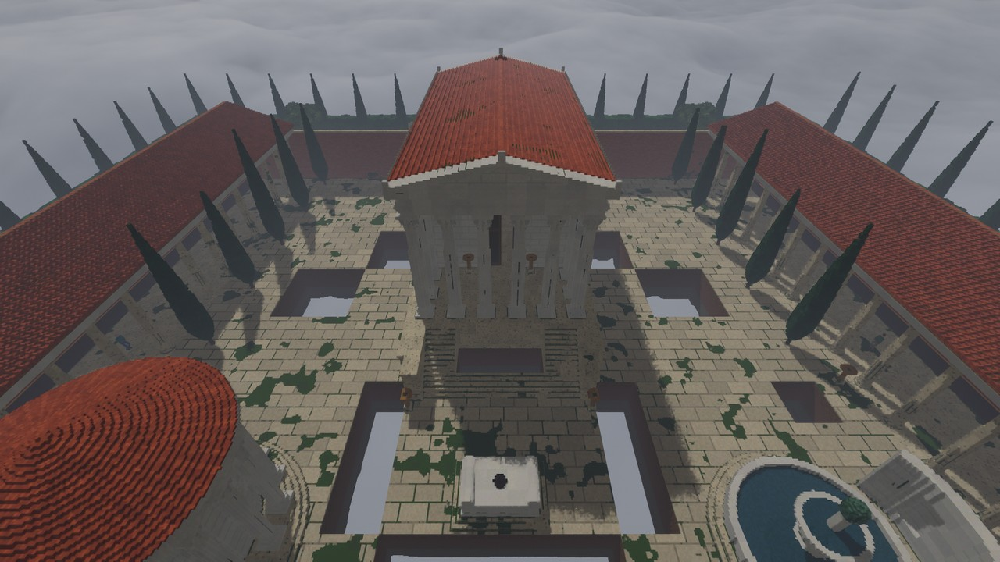

O chão que cai e sobe
- NovoNo Santuário e na Fundição, o chão é dividido em quadrados que ninguém vê. O primeiro tremor vem 15 s depois do começo de cada round, e depois vem um a cada 22 s, alternando os dois tipos.
- NovoNa queda, um quarto dos quadrados treme por 3 s e cai nas nuvens, mais rápido do que você cai: quem fica em cima morre, mas um pulo bem na hora ainda pode salvar. Eles voltam subindo das nuvens 12 s depois do começo do tremor.
- NovoNa subida, um quinto dos quadrados treme por 1,2 s e sobe 1 m, 1,6 m ou 2,2 m, levando quem estiver em cima. Eles ficam 12 s lá em cima e descem.
- JogabilidadeNo Santuário, os quadrados ficam no chão do recinto, dentro dos muros. Na Fundição, no pátio: os galpões, o piso do forno e o fosso não se mexem. Os lugares onde se nasce nunca se mexem.
- JogabilidadeO que está em cima vai junto: na Fundição, os trilhos, as caçambas e os lingotes; no Santuário, os braseiros. Os corações de vida não aparecem no chão que se mexe.